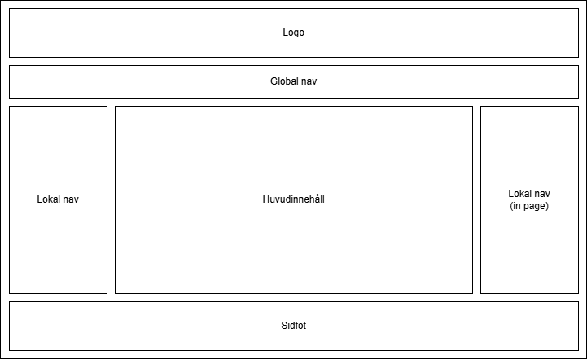
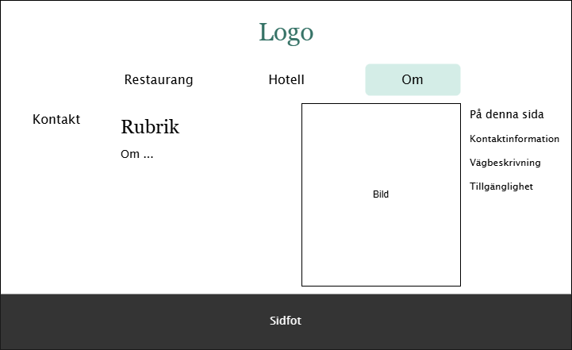

1. Syfte och målgrupp
I uppgiften skapades en webbplats för en restaurang och hotell verksamhet.
Syfte med webbplatsen är att informera kunder och locka till besök.
Mål
- Informera besökare.
- Visa restaurangens meny.
- Bordsbokning för restaurangen.
- Bokning av hotellrum.
- Det ska finnas snygga bilder på maten.
- Det ska finnas bilder på hotellrummen.
Målgruppen består av:
- Besökare till restaurangen.
- Hotellgäster
- Turister.
Användarnas behov
- Se plats och öppettider.
- Se restaurangens meny, med priser.
- Se allergilista för menyn.
- Se priser för hotellet.
- Se vägbeskrivning, tex. vägförslag och närliggande hållplatser.
- Se tillgänglighetsinfo.
2. Kravspecifikation
Innehåll
- Meny med pris.
- Minst en bild för varje måltid.
- Bild på restaurangen.
- Bilder på hotellrummen.
- Prislista för hotellet.
- Kontaktinformation
- Adress, öppettider, telefon, e-post.
- Vägbeskrivning
- Parkering, hållplatser.
- Allergilista
- Tillgänglighet
Funktion
- Man ska kunna boka bord.
- Man ska kunna boka hotellrum.
3. Beskrivning av arbetet
För att visa vilka sidor som ska finnas skapades ett diagram utifrån kraven. Struktur diagrammet visar relationerna mellan olika sidor (Garrett, 2011, s.102).

Jag skapade en wireframe för mobilskärmar och en för större skärmar. En wireframe visar hur komponenterna på en sida hänger ihop (Garrett, 2011, s.128). Det är endast huvudinnehållet och den lokala navigationen som skiljer sig mellan olika sidor i det här projektet, så det var möjligt att använda samma wireframe till flera sidor.
Eftersom den fiktiva restaurangen är placerad på landet och är nära en sjö, använder de färger som påminner om naturen. I webbplatsens mock-ups visas hur färgerna används och till vilka komponenter.
4. Bilder
Alla bilder har beskurits och storleken har ändrats i ett redigeringsprogram. Om något mer har gjorts, står det under bilden.
- Framsidan av byggnaden
- Bord och stolar
- Våfflor
- Kaffe
- Kyckling
- Scones
- Sovrum 1
- Sovrum 2
- Sovrum 3
- Sovrum 4
- sjö
- egen bild
- roterad
5. Utvärdering mot kravspecifikationen
Innehåll
- Meny med pris: Det finns en sida för menyn.
- Minst en bild för varje måltid: Bilderna finns på samma sida som menyn.
- Bild på restaurangen: Bilden med bord och stolar ska föreställa insidan av restaurangen.
- Bilder på hotellrummen: Alla rum har en egen sida med tillhörande bild.
- Prislista för hotellet: Priser står på varje rums sida.
- Kontaktinformation: Finns på om sidan.
- Adress, öppettider, telefon, e-post.
- Vägbeskrivning: Finns på om sidan.
- Parkering, hållplatser.
- Allergilista: Det finns ingen lista med varje rätt och dess allergener, men det finns information om allergier på menysidan.
- Tillgänglighet: Jag vet inte tillräckligt mycket om tillgänglighetsanpassning för att informera någon om det, så frågor om tillgänglighet skickas via formulär eller e-post.
Funktion
- Man ska kunna boka bord: Ett enkelt formulär.
- Man ska kunna boka hotellrum: Ett enkelt formulär.
Källförteckning
Garrett. (2011). The Elements of User Experience: User-Centered Design for the Web and Beyond. 2 uppl., Pearson Education